Working with Types
IDA type system fundamentals
The IDA type system is based on C-like constructs such as:
- Structures: Aggregate data types that group multiple members.
- Unions: Allow overlapping the same memory with different data types.
- Enums: Provide named integer constants.
IDA ships with type libraries out-of-the-box, but you can define custom types in the Local Types window.
Type definitions sources
- Built-in or custom type libraries(.til files)
- Custom types
- Debug information (e.g., PDB or DWARF)
Type libraries
IDA ships with type libraries for popular platforms and operating systems. They provide predefined data types that can be used in your analysis. You can view a list of currently loaded type libraries in the Type Libraries window (View → Open subviews → Type Libraries, or Shift+F11)
Load additional type libraries
- Go to the Type Libraries window. Right-click on the libraries list and select Load type library…, or press the Ins key.
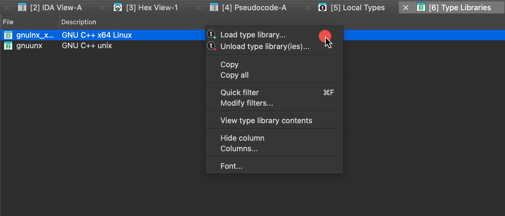
- Select the type library from the list and click OK.
Once loaded, type library definitions are accessible throughout IDA, including the Local Types window.
{% hint style=“info” %} Relation between Local Types and Type Libraries: In IDA, Local Types are custom or imported type definitions specific to your current project, while Type Libraries provide pre-defined types for common platforms and architectures. Types in the Type Libraries, once referenced, are copied into the IDB and appear under the Local Types window. {% endhint %}
See also:
- Check TILIB tutorial for creating custom type libraries
Type management essentials: Local Types view
The Local Types view provides a centralized hub for managing and customizing type definitions directly within the IDA UI. To access this view, navigate to View → Open subviews → Local Types or press Shift+F1 keys.
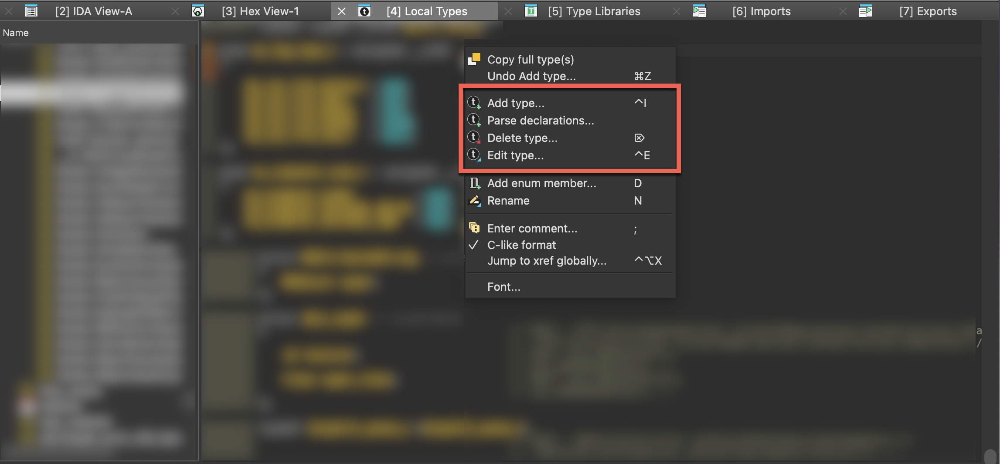
In the Local Types window, you can:
- Add a single type (structure, union, and enumeration), including importing types from loaded type libraries
- Create multiple types at once by parsing declarations
- Modify existing types
- Delete existing types
- Copy full type(s) definition to clipboard
Add new types
In the Add type dialog, you can create a custom structure, union, and enumeration, or import them from loaded libraries. To add a new type:
- press the Ins key
- right-click on the types list and select Add type… from the context menu
- go to Edit → Add type….
Create a structure (struct)
- Open the Add type dialog and in the Struct tab configure the structure settings:
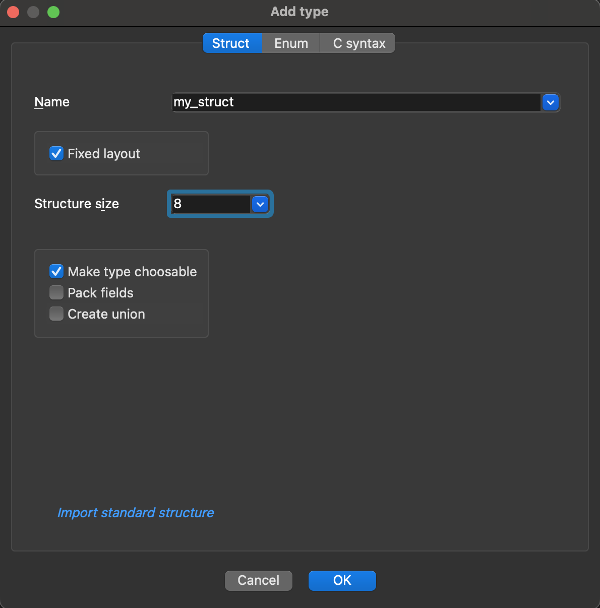
Understanding structure options:
-
Name: the unique name of your struct.
-
Fixed layout (default: enabled) When checked:
- It locks the struct size and members. It prevents accidentally changing the struct size, for example, if the user moves members around while modifying another type. Fixed layout ensures the structure layout remains stable unless explicitly modified. Note: You can still add a field to a fixed structure.
- You need to specify the Structure size in bytes.
-
Make type choosable (default: enabled) When checked:
- It includes this struct in the type listing.
-
Pack fields (default: disabled) When checked:
- It packs the fields of the struct (removes padding) and saves memory.
-
Tuple (default: disabled) When checked:
- Creates tuple, a special kind of struct.
-
Create union (Leave unchecked for structures)
- Only check it when creating a union instead of a struct.
- Click OK.
As an alternative, you can create or edit structures via free-text editor.
Create a tuple
{% hint style=“info” %} Tuples are dedicated for Golang functions that return multiple values. Unlike a function with single return value (e.g., a struct), which is returned entirely in registers or entirely on the stack, tuple fields are handled separately: some may be returned in registers, others on the stack. {% endhint %}
- Open the Add type dialog and in the Struct tab configure the tuple settings:
- specify the unique name of your tuple, and
- check the Tuple checkbox.
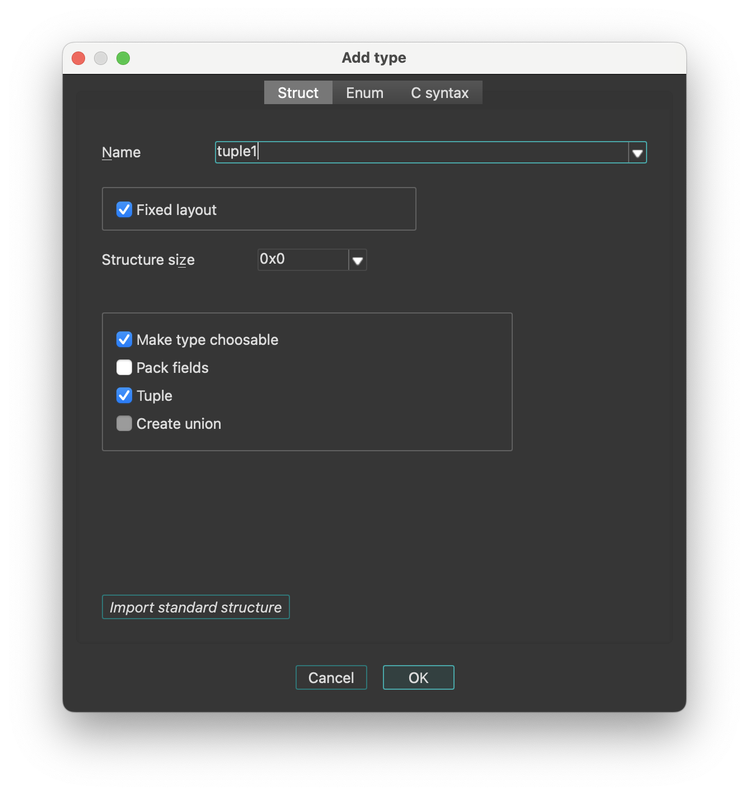
- Click OK.
{% hint style=“info” %} Two tuples with the same field types are considered equal, regardless of the field names. {% endhint %}
Create a union
{% hint style=“info” %} A union is de facto a type of a struct. Creating and editing unions follow the same principles as working with structs. {% endhint %}
- Open the Add type dialog and in the Struct tab configure the union settings:
- specify the unique name of your union, and
- check the Create union checkbox.
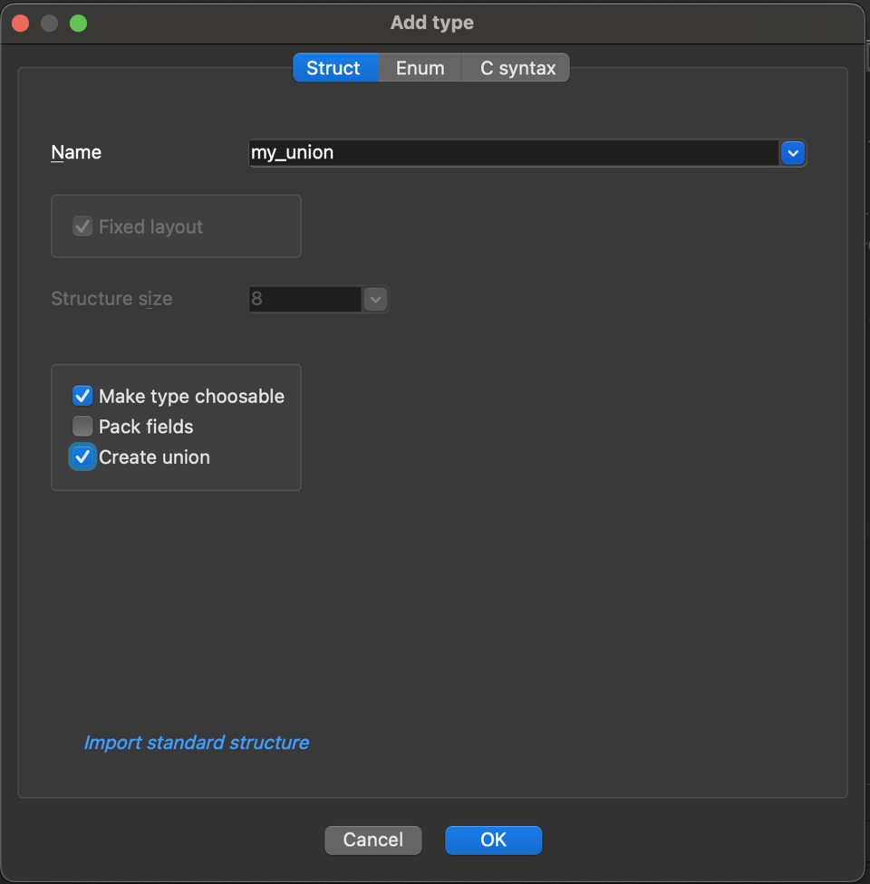
{% hint style=“info” %} When you choose to create a union, the fixed layout option will no longer be available. If you would like to turn a union to a fixed layout structure, first change “union” to “struct” in the C syntax tab, and then edit the struct. {% endhint %}
- Click OK.
Create an enumeration (enum)
- Open the Add type dialog and in the Enum tab configure the enum settings:
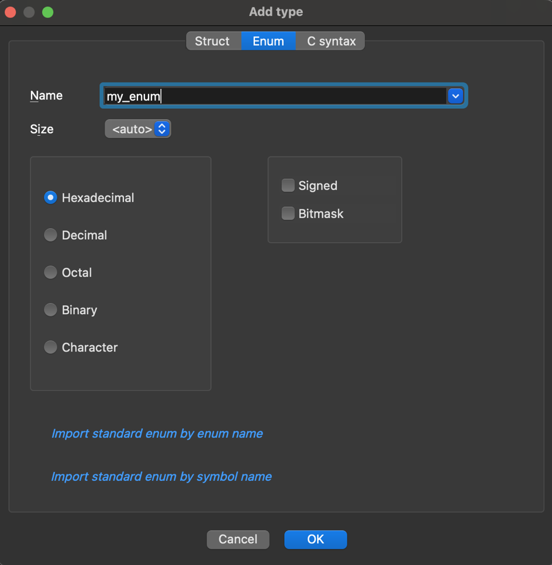
Understanding enum options:
-
Name: specify the unique name of your enum
-
Size: (default: auto)
- It determines how much memory the enum values will occupy
- You can select from dropdown the number of bytes (1, 2, 4, or 8 bytes)
- The auto option lets the compiler decide based on values
-
Number representation: defines how enum values are displayed in IDA
- Select the format for enum members from the available options: Hexadecimal, Decimal, Octal, Binary or Character (ASCII/Unicode)
-
Signed: (default: disabled)
- It determines if enum values can be negative
-
Bitmask: (default: disabled) When checked:
- It makes the enum a bitfield, and allows the representation of multiple flags in a single value using bitwise operations (e.g., OR, AND)
- Click OK.
As an alternative, you can create or edit enums via free-text editor.
Modify existing types
To modify an existing type:
- press Ctrl+E or
- right-click on the list of existing types and select Edit type… from the context menu.
Managing structure fields
Basic operations for managing struct fields are available in the context menu (from Local Types view) or via Edit menu:
| Command | Hotkey | Description |
|---|---|---|
| Rename | N | Rename field |
| Insert gap… | - | Expand the current structure by inserting undefined bytes at the cursor location. Note: the cursor must not be at the end. To define a member at the end of the structure, just use data definition commands. |
| Remove gap… | - | Shrink the current structure by deleting undefined bytes at the cursor location. The cursor must be positioned on an undefined byte. IDA will prompt the dialog to specify the number of bytes to delete. |
| Duplicate a structure type | - | Create a copy of the structure |
Commands for converting structure fields to different data types:
| Command | Hotkey | Description |
|---|---|---|
| Data | D | Convert to basic data type |
| String | A | Convert to string literal |
| Array | * | Convert to array |
Managing enum members
Basic operations for managing enum members are available in the context menu (from Local Types view) or via Edit menu:
| Command | Hotkey | Description |
|---|---|---|
| Add enum member… | D | Create a new symbolic constant in the enum. You have to specify its name and value in the new dialog. You cannot define more than 256 constants with the same value in an enum. If the current enum is a bitfield, you need to specify the bitmask. To learn about bitmasks, read about bitfields. |
| Edit enum member… | Ctrl + N | Modify existing enum member name or value. To rename an enum type name, you can also use the Rename option from the context menu. |
| Delete member “member_name” | U | Remove enum member and all associated data, including comments. |
Modifying field types
- In the Local Types view: right-click on a field and use the Field type submenu to modify member types
- In the Disassembly/IDA View: use commands from the Edit|Operand types… submenu
Delete existing types
To delete an existing type:
- press Del or
- right-click on the list of existing types and select Delete type… from the context menu.
{% hint style=“info” %} Deleting a type will remove all references to it from the database. If you recreate the type later, references will not be restored automatically and must be manually reassigned. {% endhint %}
Copy full type(s) definition to clipboard
To copy the entire C-style definition of the type:
- In the Local Types view, right-click on the type you want to copy and select Copy full type(s) from the context menu
- The complete definition, including all nested types and dependencies, will be copied to your clipboard.
Adding and editing types via free-text editor
The Struct/Enum tabs are perfect for learning IDA type system and creating simple, single types. However, for more complex tasks—such as copying types from existing source code or defining multiple related types simultaneously—the text editor offers greater efficiency and flexibility.
Add a type using C syntax tab
- In the Local Types view, open the Add type dialog.
- Go to the C syntax tab and enter a new type declaration.
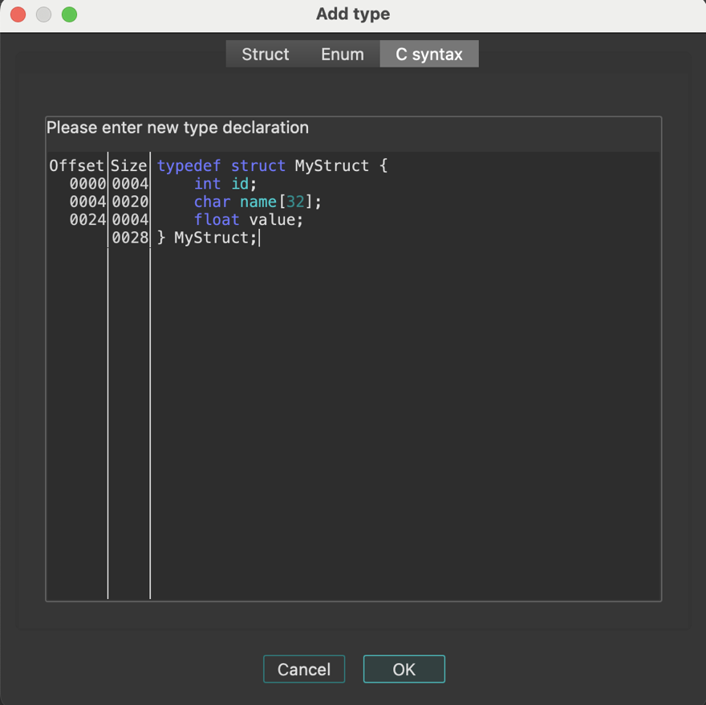
Edit a type using C syntax tab
- In the Local Types view, right-click on the existing type and select Edit type… from the context menu.
- Go to the C syntax tab and modify the type.
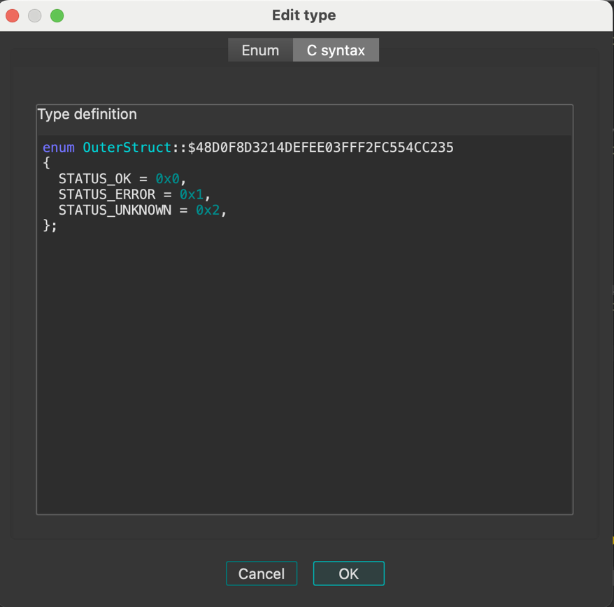
Create multiple type definitions at once
The Parse declarations… option allows you to input and process many type definitions at once, enabling batch creation of multiple types.
- Right-click on the types list in the Local Types view and select Parse declarations… from the context menu.
- In the Parse declarations… dialog, enter the type definitions using C syntax and click OK to add them to the Local Types.
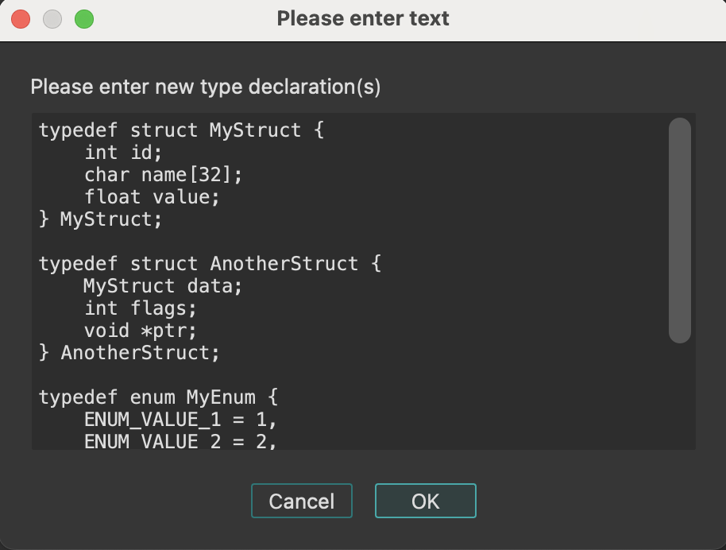
Importing types
Import types from loaded type libraries
Before you start importing types from type libraries, ensure that your desired library is already loaded in the Type Libraries window.
Import standard structures
If you want to import an existing standard structure:
-
Open the Add type dialog and in the Struct tab, click Import standard structure.
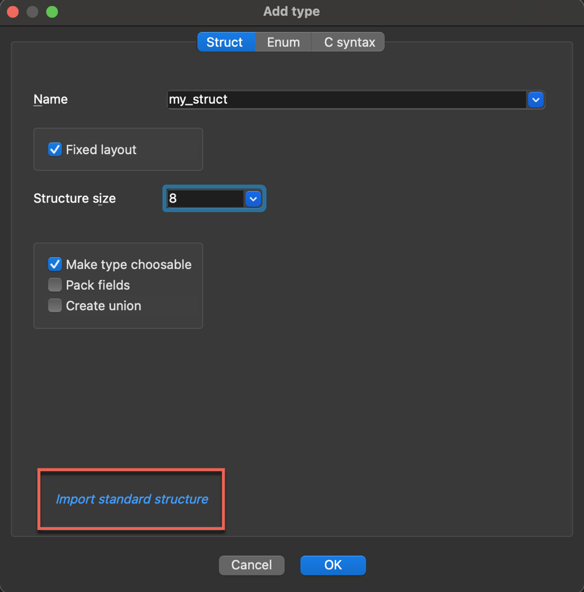
-
In the new dialog, browse and select the structure from the list of all corresponding types in the loaded libraries, then click OK to import it.
Import standard enums
If you want to import an existing standard enum from the type library:
- Open the Add type dialog and in the Enum tab, click:
- Import standard enum by enum name (1), or
- Import standard enum by symbol name (2) (useful when you know the member names but not the enum name).
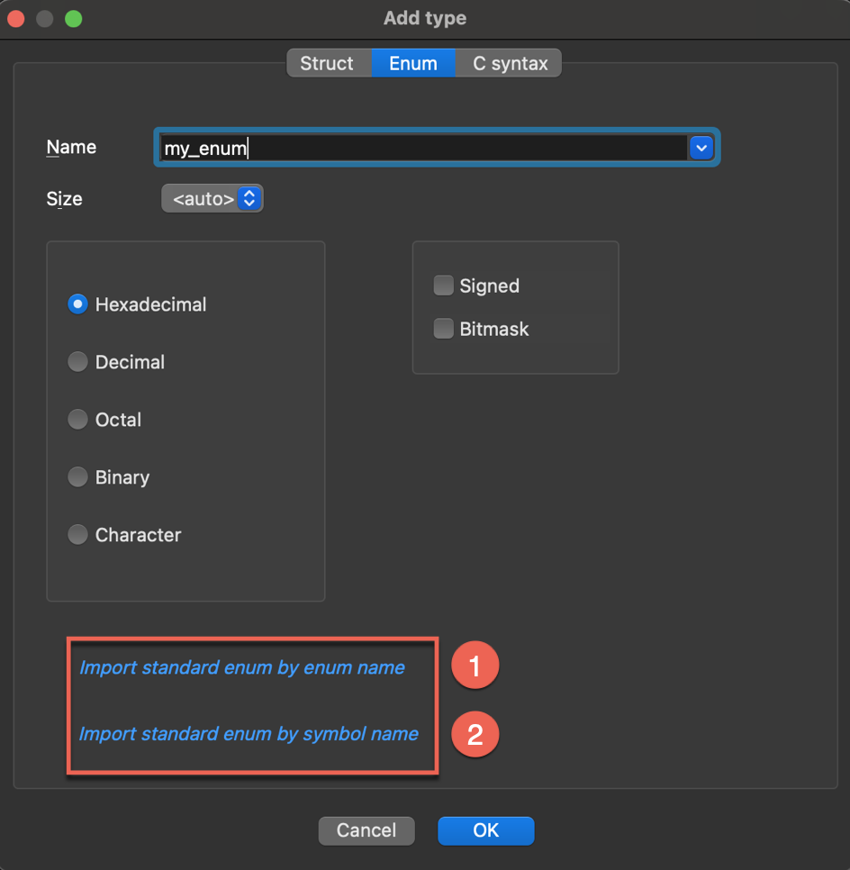
- In the new dialog, browse and select the enum from the list of all corresponding types in the loaded libraries, then click OK to import it.
Import type definitions from C/C++ header files
Header files can be parsed by three different parsers:
- legacy parser, that supports basic C,
- old_clang, which deals with complex C/C++/Objective-C source code (previous parser based on clang),
- clang - new parser introduced in IDA 9.2 (based on LLVM), supporting C/C++
You can select source parser in Options → Compiler…:
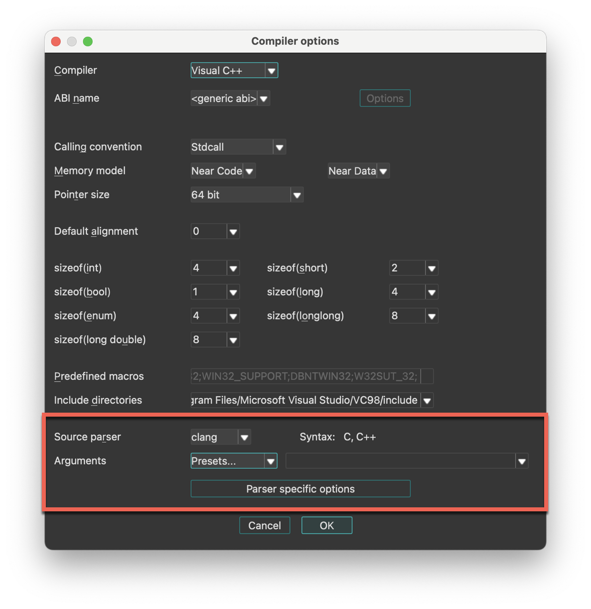
To import type definitions from header files:
- Navigate to Files → Load file → Parse C header file…
- Select your header file and click OK to import it. You should see a notification about a successful compilation. When you import a header file, all the type definitions from that file are added to your Local Types.
How can I download IDACLang?
IDAClang is a standalone command line tool to produce type libraries, that you can get from My Hex-Rays download center.
Note that we plan to drop support for IDAClang in future versions.
See also:
Import debug information
IDA supports debugging information formats such as PDB and DWARF. If your input file includes debugging information with types data, IDA will automatically import the types while loading the file.
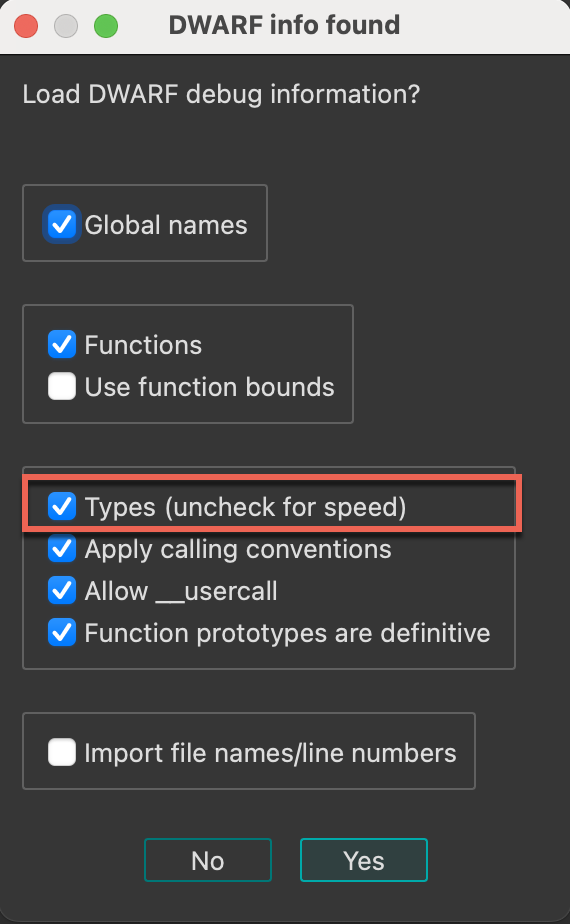
The imported types will be displayed in the Local Types window, organized under the corresponding folder (either dwarf or pdb).
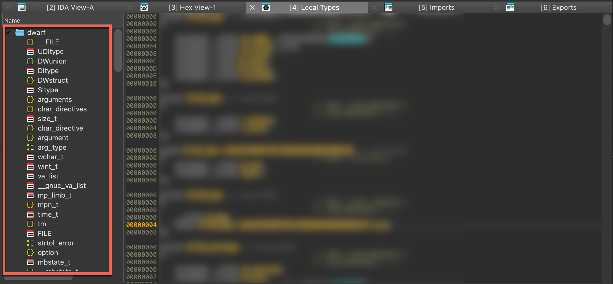
Working with types programmatically
In addition to the manual approach through IDA’s graphical interface, types can be created, modified, and managed programmatically using our APIs. This, among others, allows for the automation of type-related tasks or the creation of complex data structures, making it particularly useful for handling large sets of types or performing repetitive operations.
See also:
- Check IDAPython examples dedicated to working with types